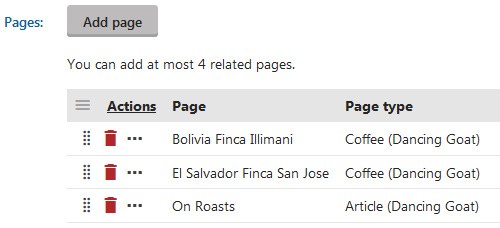

Modeling content by reusing pages
You can use not only standard page fields, but also reuse other pages when modeling the content of a particular page.
For example, an Article page that consists of standard fields such as Header , Text , and Image, can also consist of an Interesting fact page and an Author page. Both Interesting fact and Author are just pages that you can use to create the content of the page.
Prerequisite: To be able add pages, the page type of the page you are editing needs to be configured to support this functionality.
Modeling content by adding pages
Modeling content by adding different related pages in a Pages page type field is not a versioned operation. That is, adding pages to a page under a workflow immediately reflects the changes on the published version of the page.
In the Pages application, open a page on the Form tab.
Click Add page.
Select a page.
Note that the functionality can be configured so that you are only able to select pages from a specific section of the site.
Repeat steps 2 and 3 until you add all the pages.

Adding related pages(Optional) You can sort the pages by using drag and drop ( ) functionality.
Click Save.
Developers can display the content on the live site:
By accessing the data via generated code. For example in MVC views.
Using listing web parts. The Relationship name is in the Page type (field name) format.
Note
Changing content by adjusting the pages within a "page field" is not a versioned operation. For pages under workflow, such changes are immediately reflected on the published version of the page.
On multilingual websites, related pages are shared between all culture versions. For example, if you add pages to a field in an English version of a page, the same pages are also added for all other culture versions.
Copying pages does not transfer the pages configured within "page fields". The new copy is considered as a separate page from the original. You can manually add the same relationships (or different ones) as required.